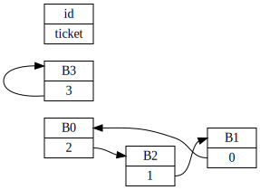
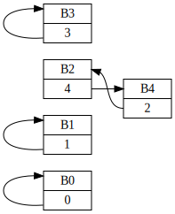

The prisoner problem is conceptually simple. You have 100 boxes which all look the same, each with a ticket (and a number between 1 and 100) inside. We can represent a simpler version with only 4 boxes on a diagram as something like this:
For the previous example, we can also write it as a mapping like the following, from box IDs (a fancy way of identifying the individual boxes) to ticket numbers:
| id | 0 | 1 | 2 | 3 |
|---|---|---|---|---|
| ticket | 2 | 0 | 1 | 3 |
Let's get to the meat of the problem: notice we can open box 0, and open the box corresponding to the ticket number, and repeat the previous step until we end up at box 0. That is a cycle. The length of that cycle is 3 because we needed to look at 2 other boxes, 2 and 1 to end up at our first box.
Take a moment to digest the previous information. What we want to find is, if we randomly shuffle the boxes, what's the probability distribution of the longest cycle?
To solve it computationally we need to write down an algorithm that will allow us to find the cycles. Below is one that comes to mind and is hopefully simple to understand. It takes an initial box ID and graph as input.
We'll call the previous algorithm A0. Here is the same thing, but in Python. The graph is simply a dictionary of box-IDs to ticket numbers:
def nodes_in_cycle(boxes, box_id):
t = box_id
nodes = [box_id]
while True:
n = boxes[t]
if n == box_id:
break
nodes.append(n)
t = n
return nodes
nodes_in_cycle({0: 2, 1: 0, 2: 1, 3: 3}, 0)
# => [0, 2, 1]
That's great and all, but what we really want is to find all the cycles in the graph. Below is an algorithm in words to do that:
Notice something nice about our algorithm - it does not search through boxes that have already been opened, so regardless of the topology (the way the nodes are connected), our algorithm will complete in almost constant time. And below is the algorithm in Python:
def all_cycles(boxes):
S = set(boxes.keys())
C = []
while len(S) != 0:
b = min(S)
L = nodes_in_cycle(boxes, b)
C.append(L)
for n in L:
S.remove(n)
return C
all_cycles({0: 2, 1: 0, 2: 1, 3: 3})
# => [[0, 2, 1], [3]]
Now that we've got our cycle finding algorithms, all we need is some graphs! Fortunately these are easy to generate. Let's walk through how we would go about generating one, but for a set of N boxes instead of just 100.
Quirk in step 1: we could also generate numbers from 1 to 100 inclusive, but it's easier to count from 0 since we're going to code it anyways. In Python we would write the following:
import random
def arrange(n):
u = list(range(n))
random.shuffle(u)
d = {}
for i in range(n):
d[i] = u[i]
return d
arrange(5)
# => {0: 0, 1: 1, 2: 4, 3: 3, 4: 2}
In the example arrangement of 5 nodes we generated (you may get different results from me), it looks rather unimpressively like the following:
So now time to plug it all together:
def simulate(reps):
results = []
for _ in range(reps):
boxes = arrange(100)
cycles = all_cycles(boxes)
maxlen = max(len(c) for c in cycles)
results.append(maxlen)
return results
The idea is that you can just run the simulation function with a big number (somewhere around 100 to 1000 if you don't want to wait for results), and then plot a histogram of the results.
With that in mind you are now ready to read the more cryptic version of the code here. There are two versions, a Python version which I test against and a Go version which is absurdly fast (around 330K simulations per second on a quad core 2.4GHz i5). The Go version uses tricks like:
Using an array instead of a dictionary to represent the graph. This is also one advantage of 0 based counting. This arises naturally from the constraint that boxes only have one ticket number. So we actually just need to shuffle an array from [0,99], and let the elements in the array be the ticket numbers, and the indexes be the box IDs.
| index | 0 | 1 | 2 | ... | 99 |
|---|---|---|---|---|---|
| number | r0 | r1 | r2 | ... | r99 |
Only one allocation of the graph. The 100-element array is only
allocated once and we shuffle that array after each cycle-finding
run (execution of the equivalent all_cycles function
on the graph).
Using all 4 cores on your PC to do 4 runs at once. This is done using threads. But the nice thing is that the simulation code does not 'know' (nor does it need to) that it is running in parallel, i.e. more than one instance is running at the same time.
Some other low level memory details. The most obvious one is using an array, which sped up the program by around 15%, from ~289K simulations per second to ~335K per second, because in a fixed-size array we don't have to pay the price for unnecessary resizing as well as running the key through a hash function on each lookup.
Packing the results (integers) into bytes. The values of each run of our experiment is strictly restricted from [1,100]. One byte is 8 bits, which has a maximum value of 28 - 1 (255). This reduced the result-file sizes by around 64%. Also a side effect is that we sped up the program a little as we don't have to convert a binary representation to base 10.
Using buffered IO. Surprisingly once the other non IO optimisations were in place, writing to the output file took up a lot of time, because we performed a write to the file for each result we had. A simple analogy; imagine another person talking to you, and the speaker wants to relay his message to another person 10 meters away. Unbuffered IO is running to the other person and telling him each word you hear. But at the same time you have to stop the speaker from talking so you don't miss out on any words.
A more sensible approach would be to have a piece of paper (equivalent to the computer's memory), and then note down every word you hear until the paper is full. Then you tell the person to stop talking, and run to the other person 10 meters away and pass her that piece of paper, take a new peice of paper and then start listening.
As with all code, do not worry too much about the optimisation tricks until you really need them. Make it correct, then make it fast. Also it is nice to see how other factors affect performance as well - not just the choice of algorithm.
Just for laughs you can see how good the simulation does for a larger and larger number of runs/iterations: